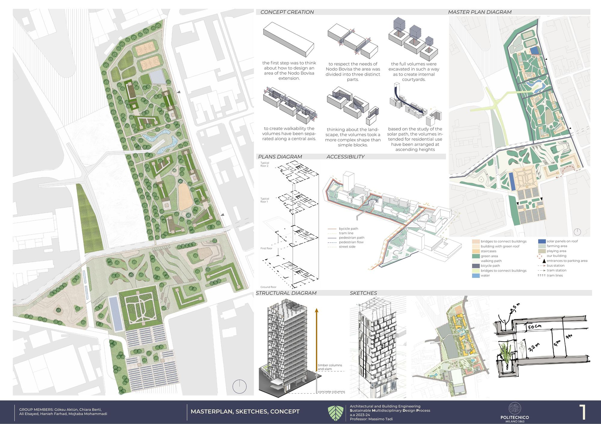
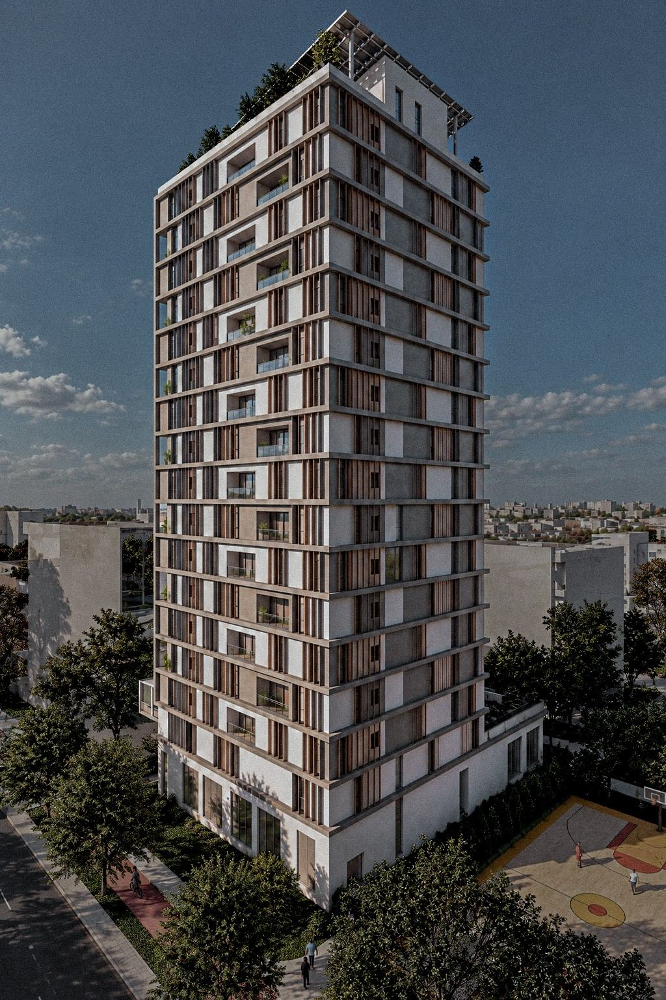
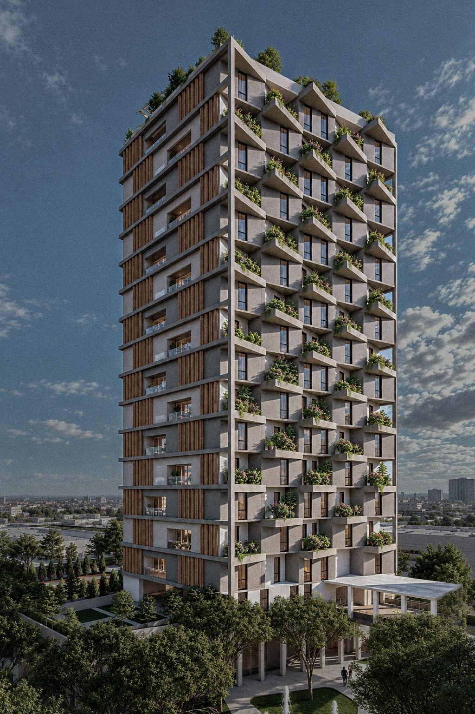
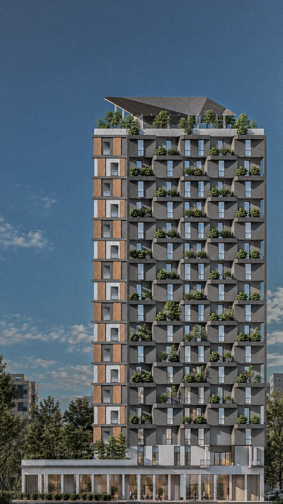
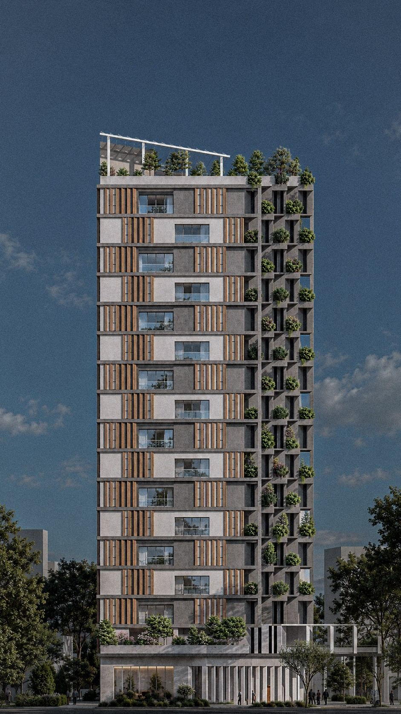
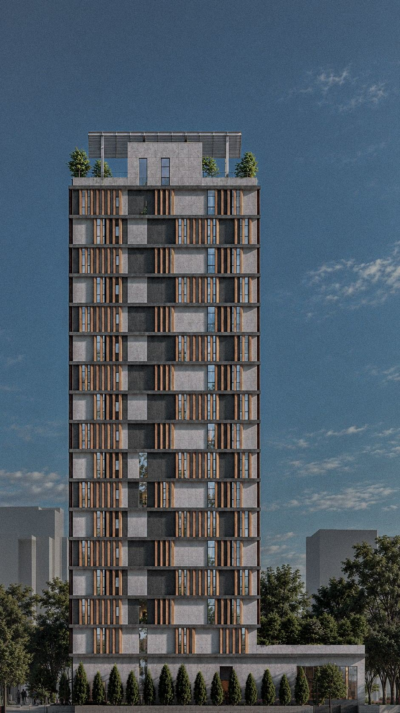
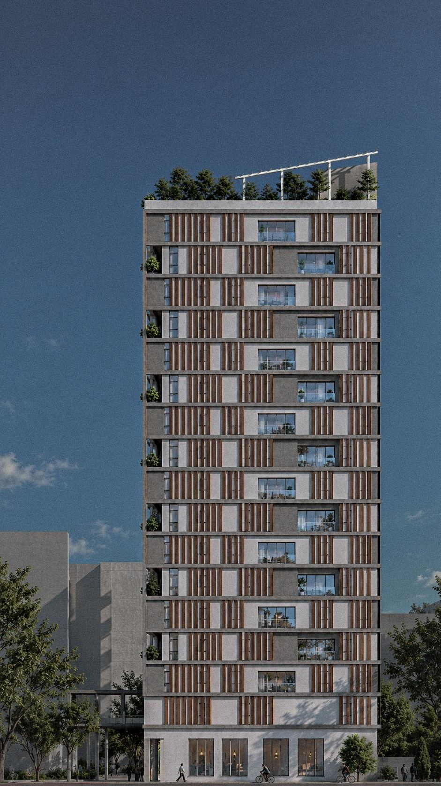
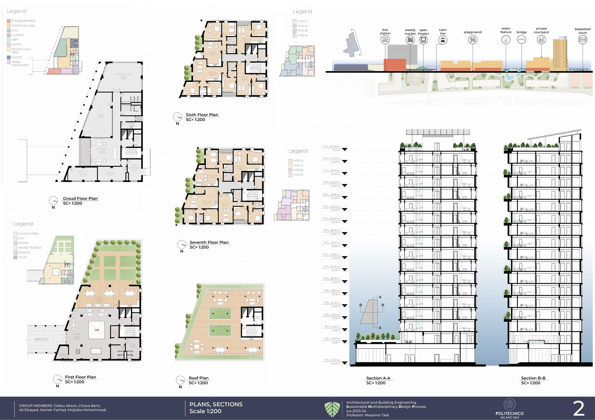
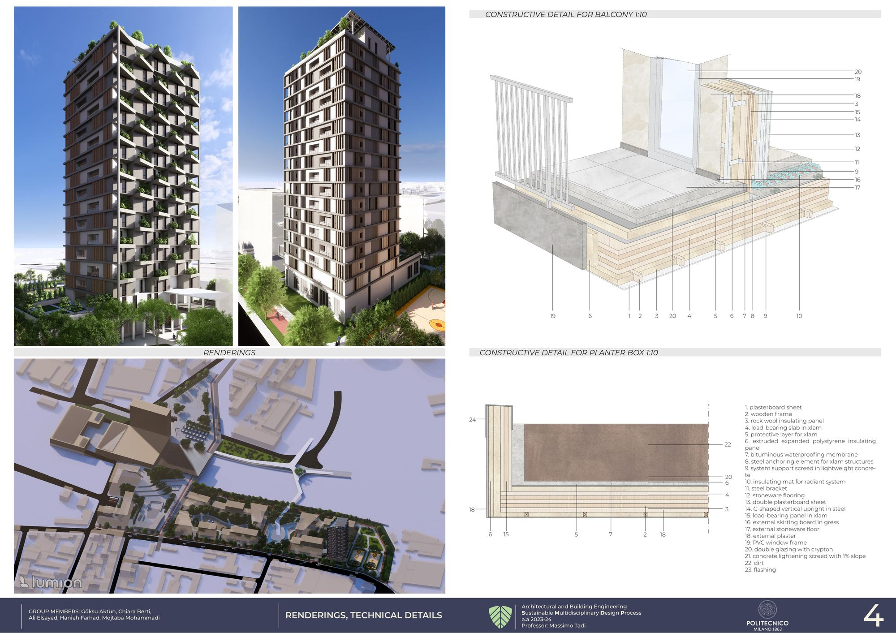

Projects / 10
Sustainable Multidisciplinary Design
Nodo Bovisa: a mixed-use extension designed with the IMM methodology
Set on a Reinventing Cities site at Nodo Bovisa in Milan, the studio asked for mixed urban functions in harmony with the context, a better station and public space, and improved interchange services.
Design
Using the IMM methodology for complex adaptive systems, the site was read horizontally and vertically to find its weak links: few types of use and poor connections between its western and eastern parts. The area was divided into three parts, the volumes were excavated into courtyards and separated along a central axis, and a solar study set their heights.
Details
The answer is a new, walkable urban centre and gateway to Milan, built on social housing, production and social engagement, with denser blocks within a five-minute walk of the station. Two bridges join east and west, one for tram 2 and one for walking and cycling, and a residential tower in timber and concrete stands at its heart.
Nodo Bovisa
Set on a Reinventing Cities site at Nodo Bovisa in Milan, the studio asked for mixed urban functions in harmony with the context, a better station and public space, and improved interchange services.
Using the IMM methodology for complex adaptive systems, the site was read horizontally and vertically to find its weak links: few types of use and poor connections between its western and eastern parts. The answer is a new, walkable urban centre and gateway to Milan, built on social housing, production and social engagement, with denser blocks within a five-minute walk of the station and a residential tower in timber and concrete at its heart.
Concept in six steps
- 01ExtensionThe area as an extension of Nodo Bovisa.
- 02Three partsTo respect the needs of the node, the area was divided into three distinct parts.
- 03CourtyardsThe full volumes were excavated to create internal courtyards.
- 04Central axisTo create walkability the volumes were separated along a central axis.
- 05LandscapeThinking about the landscape, the volumes took a more complex shape than simple blocks.
- 06Solar pathBased on the study of the solar path, the residential volumes are arranged at ascending heights.

Master plan and accessibility
Two bridges join east and west Nodo Bovisa, for tram 2 and for walking and cycling. Squares step from public to semi-private; heights rise north to a tower; bioswales feed a pond. Bicycle and pedestrian paths, the tram line and the flows around the buildings set the accessibility of the site.
Tower · structure and form
The family tower: two common floors, sixteen floors of one- and two-bedroom flats and a communal roof garden, on a concrete base with timber columns and CLT above.






Plans and sections
Ground, first, sixth and seventh floor plans and roof plan at 1:200.

Constructive details
Balcony and planter box at 1:10: plasterboard, wooden frame and rock wool insulation; load-bearing CLT slab with its protective layer; XPS insulation and bituminous waterproofing; steel anchoring for the CLT; lightweight-concrete screed with the radiant system; stoneware floors inside and out; PVC frames with double glazing; and the planter's lightening screed, soil and flashing.

Process
The IMM methodology reads the district as a complex adaptive system. The first step was to respect the needs of Nodo Bovisa: the area was divided into three distinct parts, and the full volumes were excavated to create internal courtyards. The sheets below show the master plan and accessibility, the structure and form of the tower, its plans and section, and the constructive details.